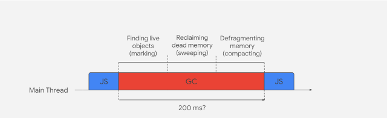

Orinoco Garbage Collector
Table of Contents
1. Overview
This document is about GC used in V8. The motivation to explore the internal of GC of V8 is the mechanism of GC of V8 to be a problem when us want to increase the size of ArrayBuffer, a phenomenon observed that V8 don’t to unreserve memory allocate from PartitionAllocator if we write data into it. For this reason, I want to reveal the myth of GC.
2. Drafts
Garbage Collector essential tasks:
- Identify live/dead objects
- Recycle/Reuse the memory occupied by dead objects
- Compact/defragment memory (optional)
2.1. Major GC (Full Mark-Compact)

2.1.1. Marking
2.1.2. Sweeping
2.1.3. Compaction
2.2. Generational layout
A newly create Object will reside in Nursery and move to intermediate after the first GC since the time it created. Move to Old Generation after the second GC since the time it cr:figures/Chromium/V8/GC/V8-Memory-Layout.png]]
This important hypothesis implies that we only need to apply compacting/moving to Old Generation due to almost all objects are die young, they becomes ’implicit’ garbage. Which can save much of cost to do compacting/moving to those short lifettime obejects.
2.3. Minor GC (Scavenger)
Minor GC is base on the hypothesis showd above. Collect Garbage in the young generation.
2.4. Heap Organization
3. Glossary
- Root objects: Objects that exists by defining. For example, objects pointed to by local variables are root objects. Global objects are roots.
- Live: If pointed to by a root object or another live object.
- Dead: Not live